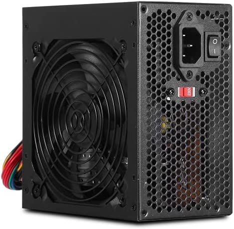
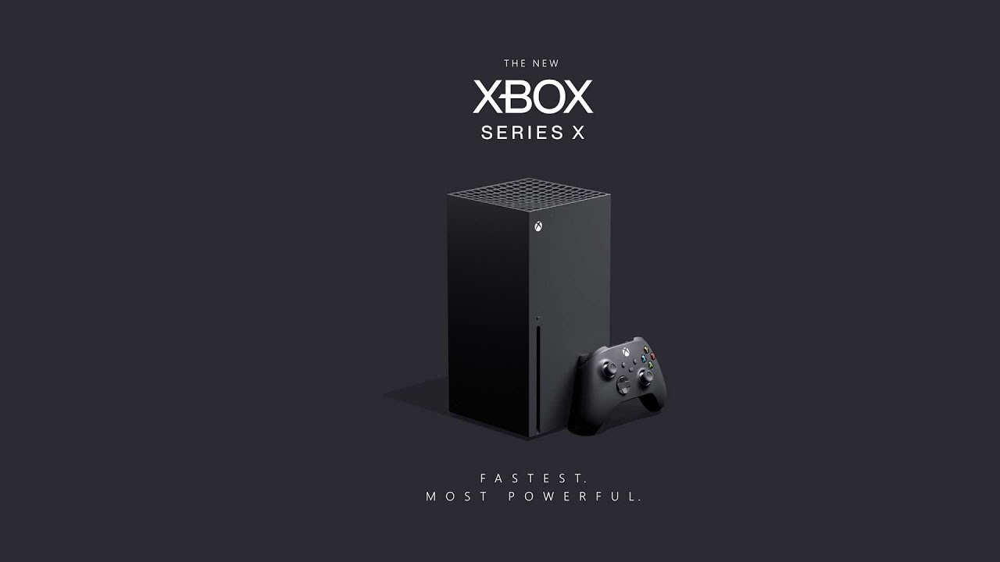

Fonte

A fonte de alimentação é um componente fundamental para a máquina. É nela que irá ocorrer o processo de transformação de energia para que todo o sistema funcione sem problemas.
As fontes de alimentação possuem função principal de transformar a corrente elétrica da rede, que chega em uma voltagem alta, para uma voltagem menor, que é a indicada para o hardware do computador. A fonte também garante a estabilidade da voltagem. A rede elétrica pode sofrer variações, o que pode ser prejudicial se ligada diretamente aos componentes.
Em caso de apagões ou instabilidades na corrente elétrica, qualquer dano é suportado pela fonte, o que protege os componentes do PC, como placas de vídeo, memórias RAM, processadores e placa-mãe.
PARA ESCOLHER A MELHOR FONTE DEVEMOS PRESTAR ATENÇÃO NAS SEGUINTES INFORMAÇÕES:
Observar a capacidade de alimentação da fonte é essencial para que o PC não sofra com falta de energia e tenha um rendimento abaixo do esperado. Ter uma noção do quanto os componentes do PC exigem para funcionar é o primeiro passo para se atentar na hora da escolha de uma nova fonte.PRODUTOS
Fonte Gamemax GP750, 750W, 80 Plus Bronze, PFC Ativo, Bivolt, com Cabo, Preto - GP750

A Vista: R$ 339,99
A Prazo: R$ 399,99 Em até 10x de R$ 39,99 sem juros no cartão Ou em 1x no cartão com até 10% OFF
Fonte Brazil PC Gamer, 600W Real, 24 Pinos, BPC/6350-B

A Vista: R$ 269,89
A Prazo: R$ 329,80 Em até 10x de R$ 32,98 sem juros no cartão Ou em 1x no cartão com até 10% OFF
Fonte Brazil PC ATX, 500W Real, 24 Pinos, Com Cabo

A Vista: R$ 121,60
A Prazo: 143,06 Em até 5x de R$ 28,61 sem juros no cartão Ou em 1x no cartão com até 10% OFF
